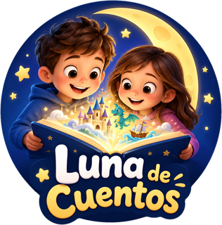

Eliminar tu cuenta de Luna de Cuentos
Última actualización: 15 de octubre de 2026
Puedes eliminar tu cuenta y todos los datos asociados tú mismo, desde la app, sin tener que escribirnos.
Cómo eliminarla desde la app
- Abre Luna de Cuentos e inicia sesión en tu cuenta.
- Entra en la pantalla de Cuenta.
- Pulsa Eliminar cuenta.
- Confirma. Si tu cuenta usa contraseña, se te pedirá escribirla. Si entraste con Google o con Apple, se te pedirá volver a iniciar sesión con ellos.
El borrado es inmediato y definitivo.
Si ya no tienes la app instalada o no puedes entrar
Escribe a lunadecuentosapp@gmail.com desde el correo con el que te registraste, con el asunto «Eliminar cuenta Luna de Cuentos». Confirmaremos la eliminación por correo en un plazo máximo de 30 días.
Qué datos se eliminan
- Tu nombre, correo electrónico y contraseña, o los datos vinculados a tu cuenta de Google o de Apple.
- Los perfiles de niño (nombre y edad) de tu cuenta y de tus dispositivos.
- Tu historial de cuentos pedidos y tus favoritos.
- El estado de tu suscripción premium en nuestros servidores.
- Los datos de tu suscripción en RevenueCat, el servicio que gestiona las suscripciones: al eliminar la cuenta le pedimos que los borre.
Qué datos se conservan
Los cuentos de la biblioteca común no contienen datos personales (usan marcadores en lugar de nombres), así que se conservan para otros usuarios. No se guarda ninguna copia con tus datos personales.
Importante: la suscripción premium
Eliminar la cuenta no cancela la suscripción. Cancélala en Google Play (Pagos y suscripciones) o en el App Store (Ajustes › tu nombre › Suscripciones) para que no se renueve.
This translation is provided for information only. If there is any difference, the Spanish version prevails.
Delete your Luna de Cuentos account
Last updated: October 15, 2026
You can delete your account and all associated data yourself, from the app, without having to contact us.
How to delete it from the app
- Open Luna de Cuentos and sign in to your account.
- Go to the Account screen.
- Tap Delete account.
- Confirm. If your account uses a password, you will be asked to enter it. If you signed in with Google or Apple, you will be asked to sign in with them again.
Deletion is immediate and permanent.
If you no longer have the app or cannot sign in
Write to lunadecuentosapp@gmail.com from the email you registered with, with the subject “Delete Luna de Cuentos account”. We will confirm the deletion by email within 30 days at most.
What data is deleted
- Your name, email and password, or the data linked to your Google or Apple account.
- The child profiles (name and age) of your account and your devices.
- Your history of requested stories and your favorites.
- Your premium subscription status on our servers.
- Your subscription data at RevenueCat, the service that manages subscriptions: when you delete the account we ask it to delete them.
What data is kept
Stories in the shared library contain no personal data (they use placeholders instead of names), so they are kept for other users. No copy with your personal data is retained.
Important: the premium subscription
Deleting the account does not cancel the subscription. Cancel it in Google Play (Payments & subscriptions) or the App Store (Settings › your name › Subscriptions) so it does not renew.
Diese Übersetzung dient nur zur Information. Bei Abweichungen gilt die spanische Fassung.
Ihr Luna-de-Cuentos-Konto löschen
Zuletzt aktualisiert: 15. Oktober 2026
Sie können Ihr Konto und alle zugehörigen Daten selbst in der App löschen, ohne uns schreiben zu müssen.
So löschen Sie es in der App
- Öffnen Sie Luna de Cuentos und melden Sie sich in Ihrem Konto an.
- Gehen Sie auf den Bildschirm Konto.
- Tippen Sie auf Konto löschen.
- Bestätigen Sie. Wenn Ihr Konto ein Passwort verwendet, werden Sie aufgefordert, es einzugeben. Wenn Sie sich mit Google oder Apple angemeldet haben, werden Sie aufgefordert, sich erneut damit anzumelden.
Das Löschen erfolgt sofort und endgültig.
Wenn Sie die App nicht mehr installiert haben oder sich nicht anmelden können
Schreiben Sie an lunadecuentosapp@gmail.com von der E-Mail-Adresse, mit der Sie sich registriert haben, mit dem Betreff „Luna de Cuentos Konto löschen“. Wir bestätigen die Löschung per E-Mail innerhalb von höchstens 30 Tagen.
Welche Daten gelöscht werden
- Ihr Name, Ihre E-Mail-Adresse und Ihr Passwort oder die mit Ihrem Google- oder Apple-Konto verknüpften Daten.
- Die Kinderprofile (Name und Alter) Ihres Kontos und Ihrer Geräte.
- Ihr Verlauf der angefragten Geschichten und Ihre Favoriten.
- Der Status Ihres Premium-Abonnements auf unseren Servern.
- Ihre Abonnementdaten bei RevenueCat, dem Dienst, der die Abonnements verwaltet: Beim Löschen des Kontos bitten wir ihn, sie zu löschen.
Welche Daten aufbewahrt werden
Geschichten der gemeinsamen Bibliothek enthalten keine personenbezogenen Daten (sie verwenden Platzhalter statt Namen) und bleiben daher für andere Nutzer erhalten. Es wird keine Kopie mit Ihren personenbezogenen Daten aufbewahrt.
Wichtig: das Premium-Abonnement
Das Löschen des Kontos kündigt das Abonnement nicht. Kündigen Sie es in Google Play (Zahlungen und Abos) oder im App Store (Einstellungen › Ihr Name › Abonnements), damit es sich nicht verlängert.
Cette traduction est fournie à titre informatif. En cas de divergence, la version espagnole prévaut.
Supprimer votre compte Luna de Cuentos
Dernière mise à jour : 15 octobre 2026
Vous pouvez supprimer vous-même votre compte et toutes les données associées, depuis l’application, sans avoir à nous écrire.
Comment le supprimer depuis l’application
- Ouvrez Luna de Cuentos et connectez-vous à votre compte.
- Allez sur l’écran Compte.
- Appuyez sur Supprimer le compte.
- Confirmez. Si votre compte utilise un mot de passe, il vous sera demandé de le saisir. Si vous vous êtes connecté avec Google ou Apple, il vous sera demandé de vous reconnecter avec eux.
La suppression est immédiate et définitive.
Si vous n’avez plus l’application ou ne pouvez pas vous connecter
Écrivez à lunadecuentosapp@gmail.com depuis l’adresse e-mail avec laquelle vous vous êtes inscrit, avec l’objet « Supprimer compte Luna de Cuentos ». Nous confirmerons la suppression par e-mail dans un délai maximum de 30 jours.
Quelles données sont supprimées
- Votre nom, votre adresse e-mail et votre mot de passe, ou les données liées à votre compte Google ou Apple.
- Les profils d’enfant (prénom et âge) de votre compte et de vos appareils.
- Votre historique d’histoires demandées et vos favoris.
- L’état de votre abonnement premium sur nos serveurs.
- Les données de votre abonnement chez RevenueCat, le service qui gère les abonnements : lors de la suppression du compte, nous lui demandons de les supprimer.
Quelles données sont conservées
Les histoires de la bibliothèque commune ne contiennent aucune donnée personnelle (elles utilisent des marqueurs à la place des prénoms) ; elles sont donc conservées pour les autres utilisateurs. Aucune copie contenant vos données personnelles n’est conservée.
Important : l’abonnement premium
Supprimer le compte n’annule pas l’abonnement. Annulez-le dans Google Play (Paiements et abonnements) ou dans l’App Store (Réglages › votre nom › Abonnements) pour qu’il ne se renouvelle pas.
Questa traduzione è fornita solo a titolo informativo. In caso di differenze prevale la versione spagnola.
Elimina il tuo account Luna de Cuentos
Ultimo aggiornamento: 15 ottobre 2026
Puoi eliminare il tuo account e tutti i dati associati da solo, dall’app, senza doverci scrivere.
Come eliminarlo dall’app
- Apri Luna de Cuentos e accedi al tuo account.
- Vai alla schermata Account.
- Tocca Elimina account.
- Conferma. Se il tuo account usa una password, ti verrà chiesto di inserirla. Se hai effettuato l’accesso con Google o Apple, ti verrà chiesto di accedere di nuovo con essi.
L’eliminazione è immediata e definitiva.
Se non hai più l’app installata o non riesci ad accedere
Scrivi a lunadecuentosapp@gmail.com dall’email con cui ti sei registrato, con l’oggetto «Eliminare account Luna de Cuentos». Confermeremo l’eliminazione via email entro un massimo di 30 giorni.
Quali dati vengono eliminati
- Il tuo nome, la tua email e la tua password, oppure i dati collegati al tuo account Google o Apple.
- I profili dei bambini (nome ed età) del tuo account e dei tuoi dispositivi.
- La cronologia delle storie richieste e i tuoi preferiti.
- Lo stato del tuo abbonamento premium sui nostri server.
- I dati del tuo abbonamento presso RevenueCat, il servizio che gestisce gli abbonamenti: quando elimini l’account gli chiediamo di cancellarli.
Quali dati vengono conservati
Le storie della biblioteca comune non contengono dati personali (usano segnaposto al posto dei nomi), quindi vengono conservate per gli altri utenti. Non viene conservata nessuna copia con i tuoi dati personali.
Importante: l’abbonamento premium
Eliminare l’account non annulla l’abbonamento. Annullalo su Google Play (Pagamenti e abbonamenti) o sull’App Store (Impostazioni › il tuo nome › Abbonamenti) perché non si rinnovi.
Esta tradução é apenas informativa. Em caso de diferenças, prevalece a versão em espanhol.
Eliminar a sua conta Luna de Cuentos
Última atualização: 15 de outubro de 2026
Pode eliminar a sua conta e todos os dados associados diretamente na aplicação, sem ter de nos escrever.
Como eliminá-la na aplicação
- Abra o Luna de Cuentos e inicie sessão na sua conta.
- Entre no ecrã Conta.
- Toque em Eliminar conta.
- Confirme. Se a sua conta usar palavra-passe, ser-lhe-á pedido que a escreva. Se iniciou sessão com a Google ou a Apple, ser-lhe-á pedido que volte a iniciar sessão com elas.
A eliminação é imediata e definitiva.
Se já não tem a aplicação instalada ou não consegue entrar
Escreva para lunadecuentosapp@gmail.com a partir do email com que se registou, com o assunto «Eliminar conta Luna de Cuentos». Confirmaremos a eliminação por email num prazo máximo de 30 dias.
Que dados são eliminados
- O seu nome, email e palavra-passe, ou os dados associados à sua conta Google ou Apple.
- Os perfis de criança (nome e idade) da sua conta e dos seus dispositivos.
- O seu histórico de histórias pedidas e as suas favoritas.
- O estado da sua subscrição premium nos nossos servidores.
- Os dados da sua subscrição na RevenueCat, o serviço que gere as subscrições: ao eliminar a conta, pedimos-lhe que os apague.
Que dados são conservados
As histórias da biblioteca comum não contêm dados pessoais (usam marcadores em vez de nomes), por isso são conservadas para outros utilizadores. Não é guardada nenhuma cópia com os seus dados pessoais.
Importante: a subscrição premium
Eliminar a conta não cancela a subscrição. Cancele-a na Google Play (Pagamentos e subscrições) ou na App Store (Definições › o seu nome › Subscrições) para que não se renove.
Deze vertaling is alleen ter informatie. Bij verschillen prevaleert de Spaanse versie.
Je Luna de Cuentos-account verwijderen
Laatst bijgewerkt: 15 oktober 2026
Je kunt je account en alle bijbehorende gegevens zelf verwijderen, vanuit de app, zonder ons te hoeven schrijven.
Hoe je het in de app verwijdert
- Open Luna de Cuentos en log in op je account.
- Ga naar het scherm Account.
- Tik op Account verwijderen.
- Bevestig. Als je account een wachtwoord gebruikt, word je gevraagd het in te voeren. Als je met Google of Apple bent ingelogd, word je gevraagd opnieuw met hen in te loggen.
Het verwijderen is direct en definitief.
Als je de app niet meer hebt of niet kunt inloggen
Schrijf naar lunadecuentosapp@gmail.com vanaf het e-mailadres waarmee je je hebt geregistreerd, met als onderwerp ‘Luna de Cuentos-account verwijderen’. We bevestigen de verwijdering per e-mail binnen maximaal 30 dagen.
Welke gegevens worden verwijderd
- Je naam, e-mailadres en wachtwoord, of de gegevens die aan je Google- of Apple-account zijn gekoppeld.
- De kinderprofielen (naam en leeftijd) van je account en je apparaten.
- Je geschiedenis van aangevraagde verhalen en je favorieten.
- De status van je premium-abonnement op onze servers.
- De gegevens van je abonnement bij RevenueCat, de dienst die de abonnementen beheert: wanneer je het account verwijdert, vragen we hen ze te wissen.
Welke gegevens worden bewaard
Verhalen in de gedeelde bibliotheek bevatten geen persoonsgegevens (ze gebruiken plaatshouders in plaats van namen) en blijven dus bewaard voor andere gebruikers. Er wordt geen kopie met je persoonsgegevens bewaard.
Belangrijk: het premium-abonnement
Het verwijderen van het account zegt het abonnement niet op. Zeg het op in Google Play (Betalingen en abonnementen) of in de App Store (Instellingen › je naam › Abonnementen) zodat het niet wordt verlengd.
To tłumaczenie ma charakter wyłącznie informacyjny. W razie rozbieżności obowiązuje wersja hiszpańska.
Usuń swoje konto Luna de Cuentos
Ostatnia aktualizacja: 15 października 2026
Możesz sam usunąć konto i wszystkie powiązane dane z poziomu aplikacji, bez konieczności pisania do nas.
Jak usunąć konto w aplikacji
- Otwórz Luna de Cuentos i zaloguj się na swoje konto.
- Wejdź na ekran Konto.
- Dotknij Usuń konto.
- Potwierdź. Jeśli Twoje konto ma hasło, zostaniesz poproszony o jego wpisanie. Jeśli zalogowałeś się przez Google lub Apple, zostaniesz poproszony o ponowne zalogowanie się za ich pomocą.
Usunięcie jest natychmiastowe i ostateczne.
Jeśli nie masz już zainstalowanej aplikacji lub nie możesz się zalogować
Napisz na lunadecuentosapp@gmail.com z adresu e-mail, którym się zarejestrowano, z tematem „Usunięcie konta Luna de Cuentos”. Potwierdzimy usunięcie e-mailem w ciągu maksymalnie 30 dni.
Jakie dane są usuwane
- Twoje imię i nazwisko, e-mail i hasło lub dane powiązane z Twoim kontem Google albo Apple.
- Profile dzieci (imię i wiek) z Twojego konta i urządzeń.
- Historia zamówionych bajek i ulubione.
- Stan Twojej subskrypcji premium na naszych serwerach.
- Dane Twojej subskrypcji w RevenueCat, usłudze zarządzającej subskrypcjami: po usunięciu konta prosimy ją o ich usunięcie.
Jakie dane są zachowywane
Bajki ze wspólnej biblioteki nie zawierają danych osobowych (mają znaczniki zamiast imion), więc są zachowywane dla innych użytkowników. Nie jest przechowywana żadna kopia z Twoimi danymi osobowymi.
Ważne: subskrypcja premium
Usunięcie konta nie anuluje subskrypcji. Anuluj ją w Google Play (Płatności i subskrypcje) lub w App Store (Ustawienia › Twoje imię i nazwisko › Subskrypcje), aby się nie odnowiła.
Această traducere are doar scop informativ. În caz de diferențe, prevalează versiunea în spaniolă.
Șterge-ți contul Luna de Cuentos
Ultima actualizare: 15 octombrie 2026
Îți poți șterge singur contul și toate datele asociate, din aplicație, fără să trebuiască să ne scrii.
Cum îl ștergi din aplicație
- Deschide Luna de Cuentos și autentifică-te în contul tău.
- Intră pe ecranul Cont.
- Atinge Șterge contul.
- Confirmă. Dacă contul tău folosește parolă, ți se va cere să o scrii. Dacă te-ai autentificat cu Google sau Apple, ți se va cere să te autentifici din nou cu ele.
Ștergerea este imediată și definitivă.
Dacă nu mai ai aplicația instalată sau nu poți intra
Scrie la lunadecuentosapp@gmail.com de pe adresa de e-mail cu care te-ai înregistrat, cu subiectul „Ștergere cont Luna de Cuentos”. Vom confirma ștergerea prin e-mail într-un termen de maximum 30 de zile.
Ce date se șterg
- Numele, e-mailul și parola ta, sau datele legate de contul tău Google ori Apple.
- Profilurile copiilor (nume și vârstă) ale contului și ale dispozitivelor tale.
- Istoricul poveștilor cerute și favoritele tale.
- Starea abonamentului tău premium pe serverele noastre.
- Datele abonamentului tău la RevenueCat, serviciul care gestionează abonamentele: la ștergerea contului îi cerem să le șteargă.
Ce date se păstrează
Poveștile din biblioteca comună nu conțin date personale (folosesc marcatori în loc de nume), așa că se păstrează pentru alți utilizatori. Nu se păstrează nicio copie cu datele tale personale.
Important: abonamentul premium
Ștergerea contului nu anulează abonamentul. Anulează-l în Google Play (Plăți și abonamente) sau în App Store (Setări › numele tău › Abonamente) pentru ca să nu se reînnoiască.
Этот перевод приводится только для информации. При расхождениях преимущество имеет испанская версия.
Удаление вашей учётной записи Luna de Cuentos
Последнее обновление: 15 октября 2026 г.
Вы можете сами удалить свою учётную запись и все связанные данные из приложения, не обращаясь к нам.
Как удалить её в приложении
- Откройте Luna de Cuentos и войдите в свою учётную запись.
- Перейдите на экран Учётная запись.
- Нажмите Удалить учётную запись.
- Подтвердите. Если ваша учётная запись использует пароль, вас попросят его ввести. Если вы входили через Google или Apple, вас попросят снова войти через них.
Удаление происходит немедленно и безвозвратно.
Если приложение уже не установлено или вы не можете войти
Напишите на lunadecuentosapp@gmail.com с адреса электронной почты, с которого вы регистрировались, указав тему «Удаление учётной записи Luna de Cuentos». Мы подтвердим удаление по электронной почте не позднее чем через 30 дней.
Какие данные удаляются
- Ваше имя, адрес электронной почты и пароль или данные, связанные с вашей учётной записью Google или Apple.
- Профили детей (имя и возраст) вашей учётной записи и ваших устройств.
- История заказанных сказок и ваше избранное.
- Статус вашей премиум-подписки на наших серверах.
- Данные вашей подписки в RevenueCat, сервисе управления подписками: при удалении учётной записи мы просим его удалить их.
Какие данные сохраняются
Сказки общей библиотеки не содержат персональных данных (в них вместо имён используются метки), поэтому они сохраняются для других пользователей. Копии с вашими персональными данными не хранятся.
Важно: премиум-подписка
Удаление учётной записи не отменяет подписку. Отмените её в Google Play (Платежи и подписки) или в App Store (Настройки › ваше имя › Подписки), чтобы она не продлевалась.
本译文仅供参考。如有差异，以西班牙语版本为准。
删除您的 Luna de Cuentos 账户
最近更新：2026 年 10 月 15 日
您可以直接在应用中自行删除账户及所有相关数据，无需联系我们。
如何在应用中删除
- 打开 Luna de Cuentos 并登录您的账户。
- 进入账户页面。
- 点按删除账户。
- 确认。如果您的账户使用密码，系统会要求您输入密码。如果您使用 Google 或 Apple 登录，系统会要求您再次使用它们登录。
删除会立即生效且无法恢复。
如果您已不再安装本应用或无法登录
请使用您注册时的电子邮箱发送邮件至 lunadecuentosapp@gmail.com，主题为“删除 Luna de Cuentos 账户”。我们将在最多 30 天内通过电子邮件确认删除。
哪些数据会被删除
- 您的姓名、电子邮箱和密码，或与您的 Google 或 Apple 账户关联的数据。
- 您的账户和设备上的孩子档案（名字和年龄）。
- 您请求的故事的历史记录和您的收藏。
- 您在我们服务器上的高级订阅状态。
- 您在 RevenueCat（管理订阅的服务）中的订阅数据：删除账户时，我们会请求其删除这些数据。
哪些数据会被保留
公共故事库中的故事不包含个人数据（使用占位符而非名字），因此会为其他用户保留。我们不会保留任何包含您个人数据的副本。
重要：高级订阅
删除账户不会取消订阅。请在 Google Play（付款和订阅）或 App Store（设置 › 您的姓名 › 订阅）中取消，以免其续订。
هذه الترجمة لأغراض إعلامية فقط. وفي حال وجود اختلاف، تُعتمد النسخة الإسبانية.
حذف حسابك في Luna de Cuentos
آخر تحديث: 15 أكتوبر 2026
يمكنك حذف حسابك وجميع البيانات المرتبطة به بنفسك من التطبيق، دون الحاجة إلى مراسلتنا.
كيف تحذفه من التطبيق
- افتح Luna de Cuentos وسجّل الدخول إلى حسابك.
- ادخل إلى شاشة الحساب.
- اضغط على حذف الحساب.
- أكّد. إذا كان حسابك يستخدم كلمة مرور فسيُطلب منك كتابتها. وإذا دخلت عبر Google أو Apple فسيُطلب منك تسجيل الدخول بهما مرة أخرى.
الحذف فوري ونهائي.
إذا لم يعد التطبيق مثبّتًا لديك أو لا تستطيع الدخول
راسل lunadecuentosapp@gmail.com من البريد الإلكتروني الذي سجّلت به، بعنوان «حذف حساب Luna de Cuentos». سنؤكد الحذف عبر البريد الإلكتروني خلال 30 يومًا على الأكثر.
ما البيانات التي تُحذف
- اسمك وبريدك الإلكتروني وكلمة مرورك، أو البيانات المرتبطة بحسابك في Google أو Apple.
- ملفات الأطفال (الاسم والعمر) في حسابك وأجهزتك.
- سجل القصص التي طلبتها وقصصك المفضلة.
- حالة اشتراك بريميوم الخاص بك على خوادمنا.
- بيانات اشتراكك لدى RevenueCat، الخدمة التي تدير الاشتراكات: عند حذف الحساب نطلب منها حذفها.
ما البيانات التي يُحتفظ بها
القصص في المكتبة المشتركة لا تحتوي على بيانات شخصية (تستخدم رموزًا بديلة بدل الأسماء)، لذلك يُحتفظ بها للمستخدمين الآخرين. ولا يُحتفظ بأي نسخة تحتوي على بياناتك الشخصية.
مهم: اشتراك بريميوم
حذف الحساب لا يلغي الاشتراك. ألغِه في Google Play (المدفوعات والاشتراكات) أو في App Store (الإعدادات › اسمك › الاشتراكات) حتى لا يتجدد.